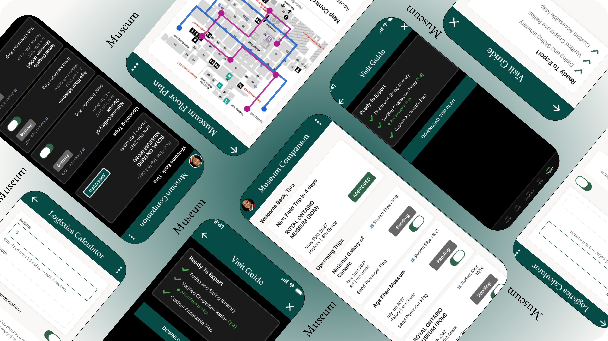

Increase Conversions
Increase school-group booking conversion by reducing logistical friction.

I designed the Museum Planning Companion to help teachers handle field trip logistics and lesson planning in one unified tool. By organizing chaperone ratios, student tracking, and accessibility maps into a single dashboard, it handles the messy admin tasks so teachers can focus on guiding their students.
Increase school-group booking conversion by reducing logistical friction.
Decrease manual customer support emails to museum staff by automating chaperone ratio math.
I combined qualitative interviews with competitive reviews and quantitative surveys to map out the planning challenges from different angles.
70% of teachers stated calculating chaperone ratios was the single most time-consuming part of trip prep.
Teachers with students needing accommodations had no single source of truth, piecing together info from emails and PDFs.
Most planning happens on a phone between classes, not at a desk. A desktop-only tool was an immediate non-starter.
I conducted 5 remote interviews with educators and surveyed 10 more to quantify manual logistics vs. lesson planning. I clustered the feedback into themes like Logistics Anxiety and Accessibility Roadblocks to shape our primary persona.
I audited two direct competitors (ROM, AGO) and one indirect competitor (Tiqets). The audit revealed massive gaps between authoritative institutional content and modern, mobile-first logistics.
Museum sites have authority but rely on slow, manual email booking for group coordination.
Ticketing apps are fast but designed for individuals, completely ignoring group chaperone math.
Crucial accessibility info is hidden in static PDFs rather than built into the interactive trip plan.
Primary Goal: Logistical Clarity. Tara is a planned professional whose success metric is getting a booking approved by the school board without revisions.
I mapped out Tara's journey to see exactly where she hits roadblocks, exploring several concepts before moving to high-fidelity wireframes.
A single overview hub displaying trip status, ratio calculations, and accessibility options together, matching how teachers actually think about a trip.
A simple tool focused exclusively on solving the chaperone-to-student math. Trade-off: Left accessibility planning as a disconnected step.
An interactive chat interface to guide teachers through booking steps. Trade-off: Felt tedious for busy teachers who wanted to scan details at a glance.

Testing with longer trip names and dense entries broke the initial layout. Here is how the UI evolved to clean up the clutter and prioritize actionable data.

Switched to a clearer linear timeline layout to show the progression of tasks.

Filtered out duplicate and irrelevant data so the dashboard only shows what is actionable.

Text clipped on longer trip names.

Allowed text wrapping instead of clipping.
I tested the prototype against a real scenario. Teachers had to log in, check a trip status, calculate the ratio for 25 students, and export an accessible route map.
Building standard school board ratios directly into the inputs as automatic defaults eliminated calculation mistakes observed in early rounds. This changes the product's underlying interaction logic to prevent errors, rather than just updating the UI.

1:5 policy applied automatically to save time.

Error states prevent invalid ratio submissions.
Teachers requested a way to act on unreturned slips. I added a "Send Reminder Ping" toggle inside the pending trip card to close the loop faster.
Wheelchair-accessible route toggles are built directly into the map screen, making accessibility a core feature, not an afterthought.


Working on this pushed me to think about accessibility and error prevention as defaults. Building the dynamic defaults system meant these needs had to be part of the data model from day one.
Prototype testing validated the flow, but measuring the actual production conversion impact would require post-launch analytics.
Test the dashboard with a larger group of educators to see if the ratio flow holds up across different school sizes.
Explore a lightweight version for parent volunteers, who currently have no view into the plan.
Validate with museum-side ticketing staff whether pre-validated submissions actually reduce their manual review cycles.